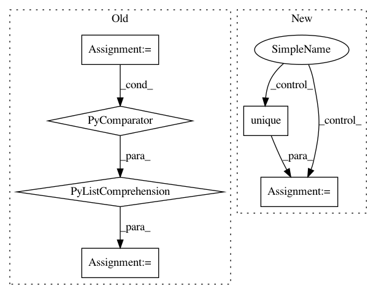

5601c4bb909b4146327fa68c6d5b668f997baaff,pyinterpret/data/dataset.py,DataSet,_build_metastore,#DataSet#Any#,125
Before Change
round_to = n_rows / float(bin_count)
rounder_func = lambda x: int(round_to * round(float(x) / round_to))
ranks_rounded = map(rounder_func, ranks)
ranks_rounded = np.array([round(x, 2) for x in ranks / ranks.max()])
return {
"median": medians,
"dists": dists,
"n_rows": n_rows,
After Change
if len(unique_dists) > 1:
ranks_rounded = pd.qcut(dists, bins / 100, labels=False)
unique_ranks = np.unique(ranks_rounded)
else:
ranks_rounded = np.ones(n_rows)
unique_ranks = np.ones(1)
return {
In pattern: SUPERPATTERN
Frequency: 3
Non-data size: 6
Instances
Project Name: datascienceinc/Skater
Commit Name: 5601c4bb909b4146327fa68c6d5b668f997baaff
Time: 2017-03-21
Author: aikramer2@gmail.com
File Name: pyinterpret/data/dataset.py
Class Name: DataSet
Method Name: _build_metastore
Project Name: ultralytics/yolov3
Commit Name: 545f756090e142412e40589c8c30ad58baade744
Time: 2019-02-28
Author: glenn.jocher@ultralytics.com
File Name: utils/utils.py
Class Name:
Method Name: build_targets
Project Name: SheffieldML/GPy
Commit Name: 486def6e0c0c415fd0bb168d9b81974a7ff37607
Time: 2015-10-06
Author: ibinbei@gmail.com
File Name: GPy/plotting/gpy_plot/latent_plots.py
Class Name:
Method Name: plot_latent_scatter